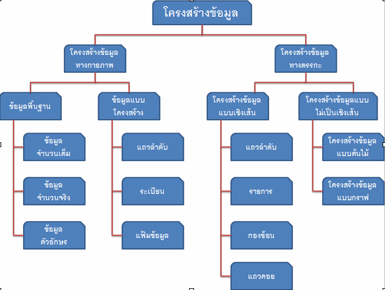

กฎพื้นฐาน โครงสร้างข้อมูล และสูตรการคำนวณทางคอมพิวเตอร์

กฎ/สูตร: ชิปแรง 2 เท่าทุก 2 ปี (Moore), คอมพิวเตอร์ประกอบด้วย CPU+RAM+I/O, ประสิทธิภาพวัดด้วย Big O (O(1) เร็วสุด ➡️ O(2ⁿ) ช้าสุด)โครงสร้างข้อมูล: Array (ต่อกัน), Linked List (พอยเตอร์โยง), Stack (LIFO-เข้าทีหลังออกก่อน), Queue (FIFO-เข้าก่อนออกก่อน), Tree (ลำดับขั้น), Graph (เครือข่าย)